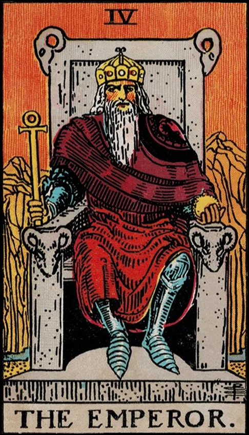

Internal Block
You may feel stuck because your inner structure is either too rigid or not defined enough. Part of you may fear taking authority over your life — or you may be clinging to control so tightly that nothing new can grow.
Psychological Frame
This individuation phase asks you to develop healthy internal boundaries and sovereignty. The Emperor is the archetype of self-definition. Resistance appears when leadership feels intimidating or when past experiences taught you that authority is unsafe.
Where You May Be Resisting
- Fear of responsibility or leadership
- Over-controlling or under-directed energy
- Avoiding boundaries to keep the peace
- Feeling overwhelmed by important decisions
Coaching Question
“What part of my life is asking me to step into leadership?”
Practice
- Define one boundary you need to set.
- Make one clear decision you’ve been postponing.
- Create a simple 1–3 step plan to move forward.
Core Insight
“Structure is not confinement — it’s the foundation of freedom.”